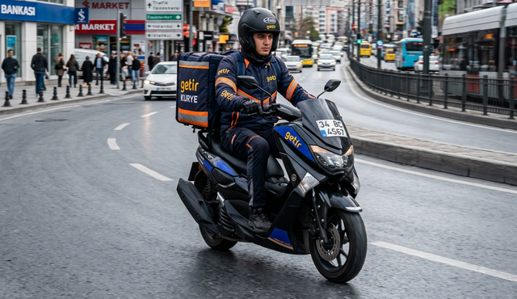
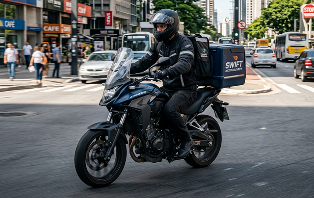

SRC Kurye Belgesi Nedir?
SRC Kurye belgesi, motosiklet veya moped ile ticari amaçlı kurye ve kargo taşımacılığı yapan sürücülerin alması gereken Mesleki Yeterlilik Belgesidir. Karayolu Taşıma Yönetmeliği'nde 2026 başında yapılan düzenlemeyle zorunlu hale gelmiştir.
Belge, geleneksel SRC belgelerinin kurye sektörüne uyarlanmış versiyonudur. Eğitim süresi daha kısa tutulmuş, uygulama sınavı kaldırılarak yalnızca teorik e-sınav şartı getirilmiştir.

Kimler SRC Kurye Belgesi Almak Zorunda?
- Motosiklet ile ticari kurye ve kargo taşımacılığı yapanlar
- Moped ile paket, yemek veya ürün teslimatı yapanlar
- Getir, Yemeksepeti, Trendyol Go gibi platformlarda kayıtlı kurye sürücüleri
- Kargo şirketlerinde motosikletle teslimat yapanlar
- Kendi adına bağımsız kurye hizmeti verenler

SRC Kurye Eğitimi Nasıl İşler?
SRC Kurye eğitimi 25 saatlik teorik programdan oluşur. Eğitimde trafik mevzuatı, yük ve paket taşıma kuralları, kişisel güvenlik önlemleri, mesleki sorumluluklar ve kaza önleme teknikleri işlenir.
Eğitim tamamlandıktan sonra MEB'in belirlediği sınav döneminde e-sınava girilir. Geçme notu 60 ve üzeridir; uygulama sınavı bulunmamaktadır.
Gerekli Evraklar
- 2 adet biyometrik fotoğraf
- Nüfus cüzdanı fotokopisi
- A veya A1 sınıfı sürücü belgesi fotokopisi
- Öğrenim belgesi fotokopisi
Platform Kuryelerini Neler Bekliyor?
Kurye platformları yakın vadede SRC Kurye belgesi olmayan sürücüleri sisteme kabul etmemeye veya mevcut sürücüleri çıkarmaya başlayabilir. Belgenizi şimdiden alarak kesintisiz çalışmaya devam edin.
Ayrıca SRC Kurye belgesi olmaksızın kaza yapılması durumunda sigorta şirketi hasar ödemesini "mesleki yeterlilik belgesi eksikliği" gerekçesiyle reddedebilir. Bu risk, belge maliyetinin çok üzerindedir.
Elektrikli Bisiklet ve 50cc Altı Araçlar?
Yönetmeliğin bu araçlara uygulanması konusundaki değerlendirme sürmektedir. Belirsizlik ortamında bile belge almak, denetimlerde sorun yaşamamak için en güvenli yoldur. Güncel durum için bizi arayın.
Ankara'da Kayıt
SRC Kurye eğitimlerimiz Ankara'da sunulmaktadır. Hafta içi ve hafta sonu program seçenekleri mevcuttur. Kayıt ve program detayları için hemen bizi arayın.